Taksha UI plans
Every screen the plans in docs/plans/ need, drawn with the app's own tokens and components, so building a phase starts from a ready screen. Each card opens the screens; each folder also has a screens.md with data, states and copy. Every board ends with a States section (loading, empty, error, no access, done), and Hide notes at the top right shows the screens without annotations. Read README.md for the design rules.
Palette in use
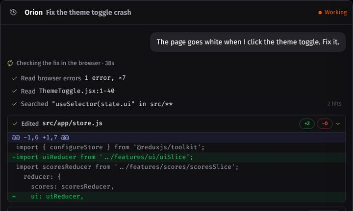
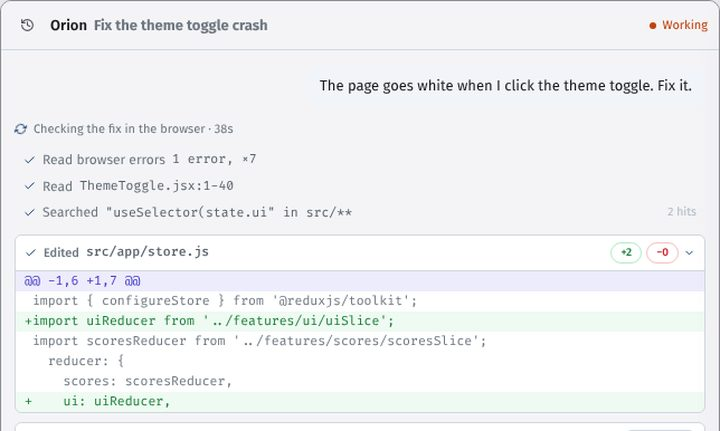
Agent tools
Inside the IDE: Problems and Output tabs, new tool steps and result cards, ask-first approvals, checkpoints, the live editor with Orion's cursor, and the diff review. 7 screens and their states.
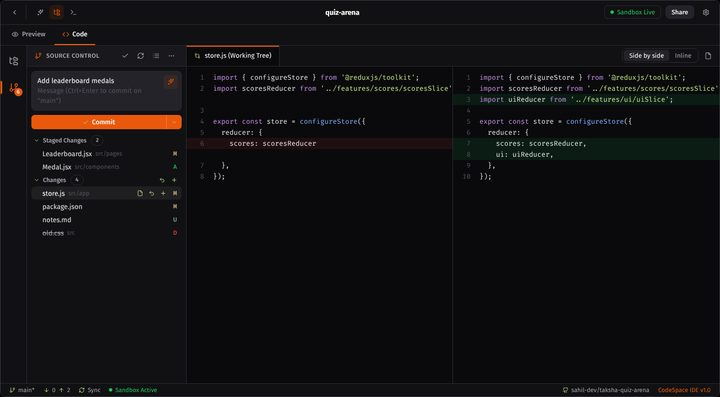
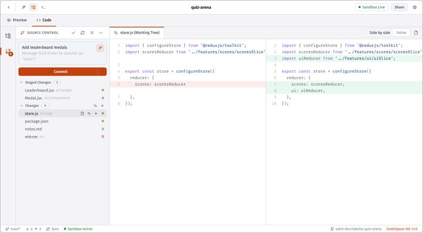
Source Control and GitHub
Settings GitHub, new project with a repository, the Source Control panel with Monaco diffs, branches, sync, conflicts and history. 8 screens and their states. The plan is a draft.
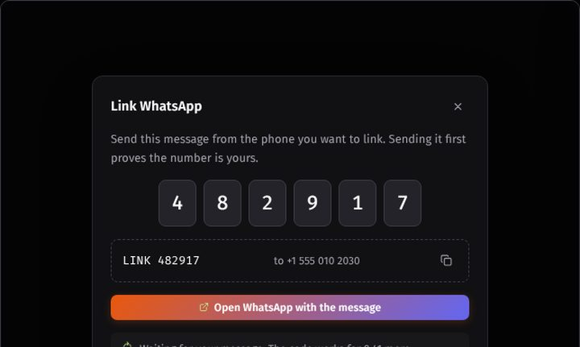
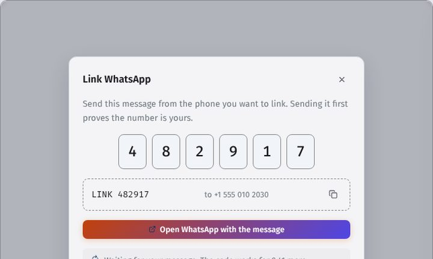
WhatsApp and notifications
Notifications settings, linking a phone, runs started from WhatsApp, message copy, and the admin notify module: announcements, delivery log, failed deliveries. 9 screens and their states.
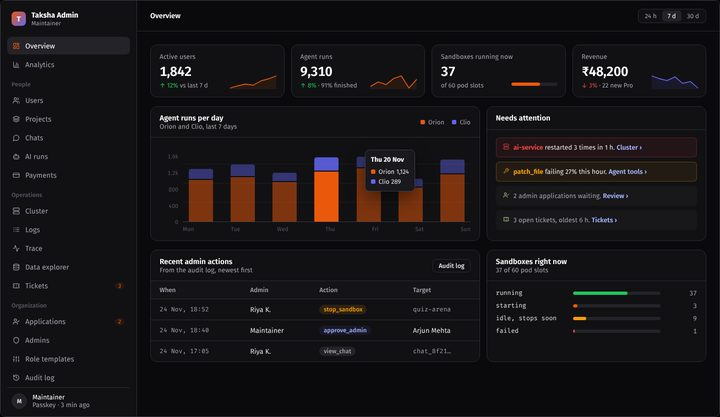
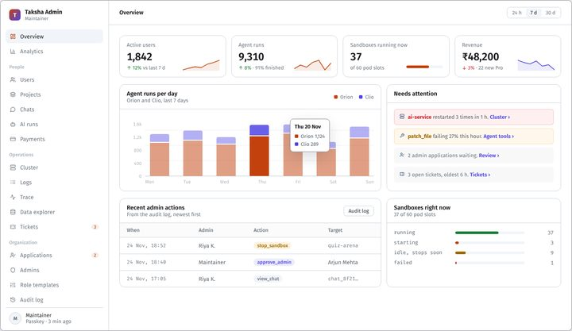
Admin portal
A new app on the main app's tokens and the payments dashboard shell. Sign in with passkeys, approvals and grants, users 360, chats with reasons, cluster, logs, data explorer, tickets, payments. 31 screens and the page states every list uses.
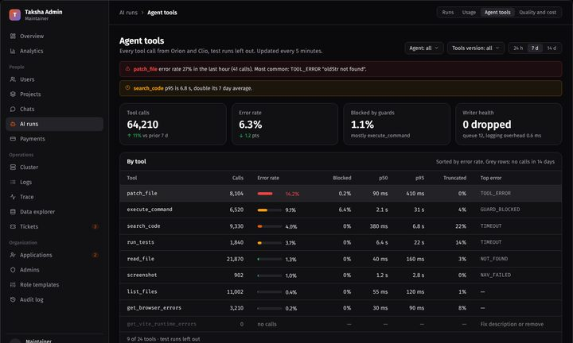
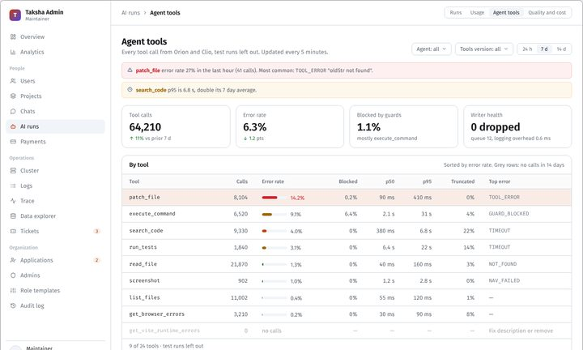
Tool call analytics
The Agent tools tab in the admin portal: warnings, per-tool error rates and latency, error codes, release comparison, stuck runs. 3 screens and their states.
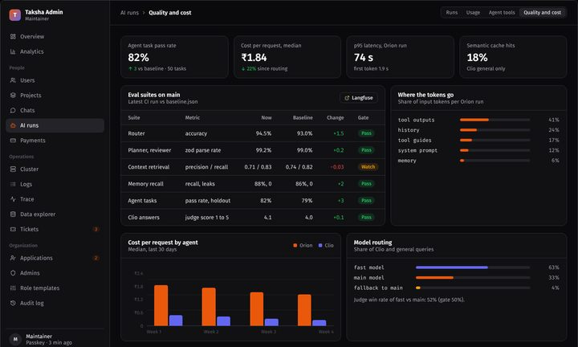
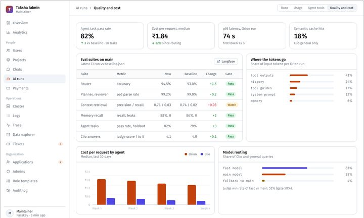
LLMOps (proposal)
No user UI. An optional Quality and cost tab that sums up evals, cost per request, token breakdown and routing next to the rest of the AI data. 2 screens and their states.
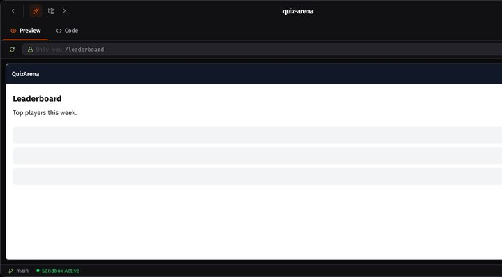
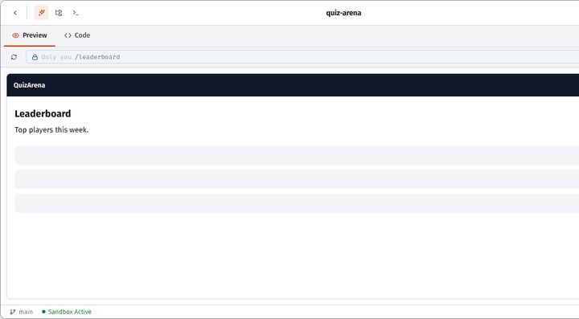
Preview access and share links
The owner-only preview, opening it in a new tab, and 1 hour view-only share links from the editor and from WhatsApp, plus the pages a viewer sees when a link has expired, was turned off or the sandbox is asleep. 6 screens and their states.
No screens: the sandbox MCP server plan is already built (its "Connect your own agent" modal exists, see CI-10), and Kafka stages K1 to K4 change delivery, not what users see.
Built today
Every screen that already exists in the code, drawn the same way, so the whole app, built and planned, sits in one place. INVENTORY.md lists each screen with its component file and states.
Public and sign in
The landing page from hero to footer, sign in with Google, and the session check. 7 screens and their states.
Dashboard
Playground prompt, sandbox provisioning, Recents, My Apps, create and delete a project, and the account menu. 7 screens and their states.
IDE
The workspace with preview, editor and bottom panel, Orion runs and plan review, chat history, the Clio copilot, connecting your own agent, and request errors. 11 screens and their states.
Settings
Profile Account, Editor & Copilot, Billing & Limits, API & Security, and Trash & Recovery. 5 screens and their states.
Settings redesign
Proposed redesign of Settings: grouped sidebar, two-column rows, autosave status, live editor preview, plan and usage with real analytics. 9 screens plus states.
Payments in the main app
Plans, feature comparison, plan detail, checkout and invoices inside the main app. Today its route redirects to the billing app. 5 screens and their states.
Billing app
The separate payments app: dashboard, usage analytics, AI requests, plans, checkout, invoices and their drawers. 11 screens and their states.